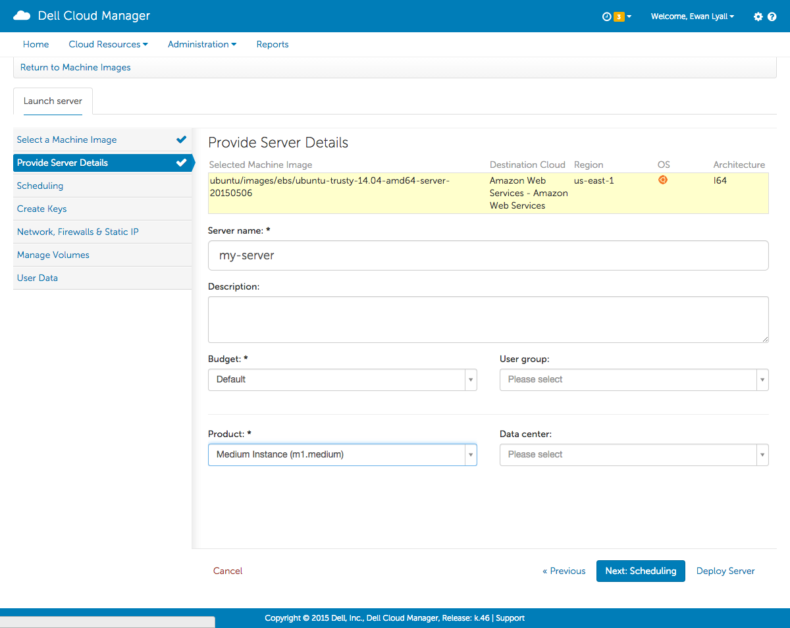
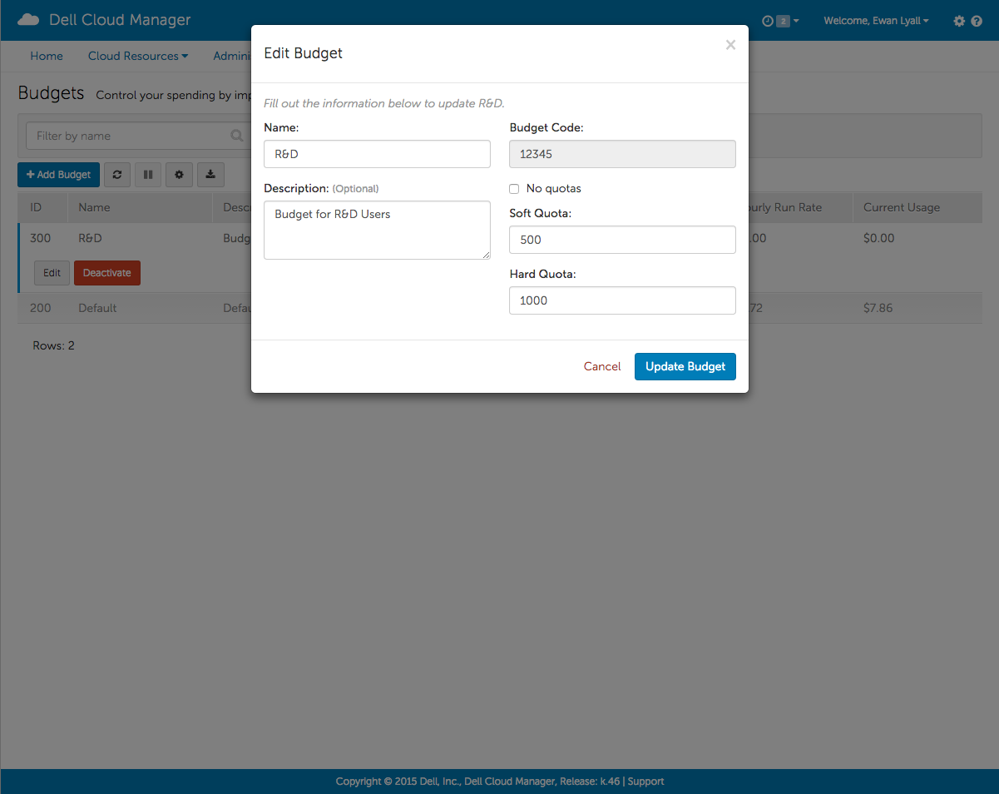
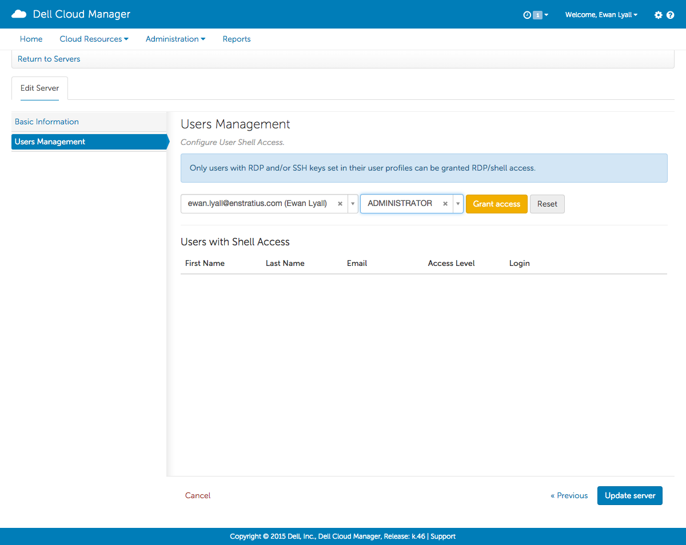
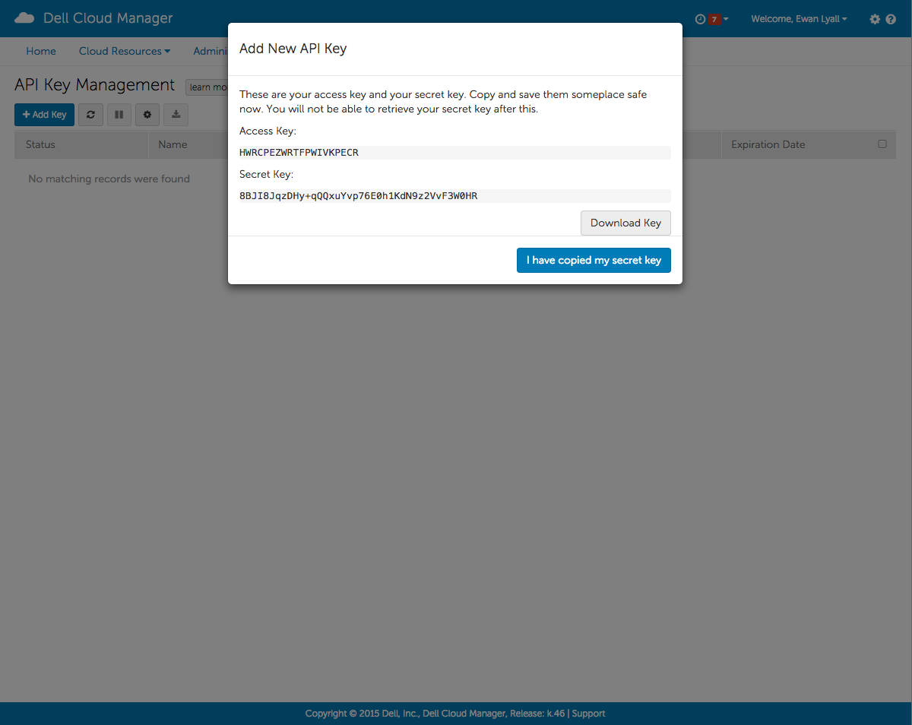

Dell Cloud Manager |
Dell Cloud Manager |
Enables self-service provisioning of cloud resources on supported clouds through a single user ID using the console or API.
Watches over your cloud resources and account state, monitoring public, private or hybrid cloud environments for changes.
Dell Cloud Manager provides agility, governance and choice for managing your cloud infrastructure.
Agility - helps realize the economic and operational advantages of cloud computing, providing consistency across cloud platforms and enables improved service levels.
Governance - provides access controls including encryption, advanced user authentication, and budget management. This ensures appropriate level of access to your cloud environment.
Choice - support for all leading public and private cloud platforms, including access to configuration management tools, DCM offers a unified management solution for your single or multi-cloud environment.
Dell Cloud Manager is available as software-as-a-service (SaaS) or can be installed and run on-premise.
Public Clouds
Private Clouds
Servers
Machine Images
Volumes
Snapshots
Start a paused server

Display Server Information

Launch server from a machine image 
Deploy New Volume
Create a volume from a snapshot

Networks
Firewalls
Load Balancers
IP Addresses
Display virtual network information

Edit a Firewall

(e.g. Amazon Web Services Elastic Load Balancer)
Create a Load Balancer
Manage the list of servers being serviced by the Load Balancer

Assign a static IP address to a server

Release a static IP address from a server

fdisk -l as root and note the deviceIDmkfs.ext3 /dev/deviceIDmkdir /mnt/servicesmount /dev/deviceID /mnt/servicestouch /mnt/services/test.txtmkdir /mnt/services_2mount /dev/deviceID /mnt/services_2ls -l /mnt/services_2 |
|
 |
|
Email - Dell Cloud Manager userid. Cannot be changed.
SSH Public Key - specifying a public key in a user profile allows for DCM agent-facilitated user account creation on unix servers
Windows Password - specifying an RDP password in a user profile allows for DCM agent-facilitated user account creation on windows servers
mkdir ~/.sshchmod 700 ~/.sshssh-keygen -t rsacat ~/.ssh/id_rsa.pubIn DCM, click your user name and select the Your Settings option
Click the Credentials tab
A Customer in Dell Cloud Manager is a logical entity that contains one or more cloud accounts.
The Customer name is required when the first account for the customer is created.
An account has a one-to-one relationship with a a set of cloud credentials that are tied to a cloud provider.
Multiple users in DCM can be associated with one account.
Users are linked with each individual who logs in to Dell Cloud Manager.
Users can be linked to one or more accounts.
Define which resources can be accessed.
Define what actions can be performed against those resources.
Roles contain a set of access rights.
Visible customer wide
A Group is the key central security component of Dell Cloud Manager.
All users are assigned to at least one group, but can be assigned to several groups.
A group can contain zero or one role. However if a group does not have a role then the group does not provide any access rights.
Group to Role mappings are performed at the account level
Access rights are cumulative. If a user is added to multiple groups, the user's access rights will be a union of the access rights from all roles associated with those groups.
User and Group management can be performed by an external source such as an LDAP directory, Microsoft Active Directory, SAML etc. Access rights management and group to role mapping must be performed within DCM.
This diagram shows the relationship between customers, cloud accounts, groups, roles and users.

A group can only have one role assigned to it.
After a new group is created there are no roles assigned to it.
A Role can have zero or more access rights assigned to it.
After a new role is created the role does not have any access rights.
On the Groups tab of the User Access page, click on the "Edit Group" action for the group.
On the Role Assignments tab use the dropdowns to select the required role for each cloud account
In this example, all members of this group will be granted the Basic User role for the "Amazon Web Services" account and no role (and therefore no permission) for the "Amazon Web Services 1" account

Roles contain a set of access rights which define the resources that can be accessed and the actions can be performed against those resources.
After a new role has been created it does not have any access rights.
To create a role the following information is needed:
Click on the "Add Role" link on the Roles tab of the User Access page.
Access rights define what resources can be accessed and what actions can be performed against those resources.
Access rights are composed of the following 3 items: Resource, Policy and Qualifier.
Every page, link and action in the Dell Cloud Manager console is controlled by at least one resource. For example:
Resources are further controlled by policies.
Some console actions require multiple resource-action pairs.
There are three Qualifiers available when creating an access right: ANY, GROUP, and MINE.
Only one Qualifier per access right can be selected.
To explain how the Qualifier works assume we are creating an Access Right to allow users to make an image of a server.
Now applying the 3 different Qualifiers to the Access Right:
ANY - users with this access right can make an image of any server.
GROUP - users with this access right can make an image of any server owned by a group that they are a member of.
MINE - users with this access right can make an image of any server that they own (servers they have launched).
Click on the "Edit Access Rights" link for the role and complete the form.
Dell Cloud Manager provides the ability to track and control your costs incurred in the cloud.
Dell Cloud Manager tracks infrastructure costs based on the costs reported by the cloud provider or in the case of an on-premise installation of Dell Cloud Manager, against a customizable set of values.
Dell Cloud Manager calculates costs based on the hourly run rate for usage.
Servers, storage, load balancers, and IP Addresses are all examples of items that have an associated cost in many of the public clouds.
Budgets can be setup quickly and easily from Dell Cloud Manager by creating Budget Codes containing soft and hard quotas.
The Budgets Codes are then used to track and control your expenses in the cloud.
Budget Codes are created and associated with your various cloud resources to track and control their associated costs.
Budget Codes are associated with user groups at the account level.
The costs incurred are used to calculate a run rate and project costs.
If multiple cloud providers are used, Dell Cloud Manager will gather the expenses from the multiple cloud providers and aggregate them in the Budget Codes.
Quotas can be used to notify or block users when creating new cloud resources when a budget is either approaching or will breach it's limit.
Click on the "Add Budget" link on the Budget Management page

On the Groups tab of the User Access page click the "Edit Group" link for the group to be assigned the budget. On the Budget Assignments tab, associate the budget with the desired cloud account.
Display the Dell Cloud Manager Agent Log
Create a user account on the running server 
sudo su - rootcurl -s https://es-pyagent.s3.amazonaws.com/installer.sh > installer.shchmod 755 installer.sh./installer.sh/etc/init.d/dcm-agent startConfiguration Management
Dell Cloud Manager supports version 0.10.x of these three current types of Chef servers:
Adding a Chef Account

Chef Environment

Performing a Chef run at server launch

apache2 : apache2ConfigureServerWithChef and runConfigureManagement-CHEFDell Cloud Manager creates jobs for many of the actions issued from the console, especially those that request services from the cloud:
You can display the status of the jobs from the Dell Cloud Manager console Job History page.
Failed jobs are highlighted in red and marked *Attention required...
To display the Job History click on the Console View all Job History menu item next to the username.

The Dell Cloud Manager REST API gives end users programatic access to most features that are avalable through the user interface. This allows existing applications or third-party tools to make authenticated calls against DCM.
There are two different types of API key, User Keys and Account Keys
From the API Key Management screen, click Add Key

Record the details and keep them safe! 
The Dell Cloud Manager REST API supports standard HTTP requests against resources, generally:
Responses can either be in JSON or XML format.
The client signs each request using the Access Key and provides the signature as part of the request header.
Dell provides some authentication code examples in various languages to help users get started generating their own applications or tools.
Further to this, mixcoatl is a python wrapper for the DCM API. It is opensource and available publicly at https://github.com/enStratus/mixcoatl. Mixcoatl provides 2 methods for interacting with the API:
Note that there is currently no support from Dell for mixcoatl, but you are welcome to fork and contribute.
To use mixcoatl:
pip install -U mixcoatlexport ES_ACCESS_KEY=export ES_SECRET_KEY=export ES_ENDPOINT=https:///api/enstratus/2015-04-27 export ES_API_VERSION=2015-04-27dcm-list-serversdcm-get infrastructure/Server/